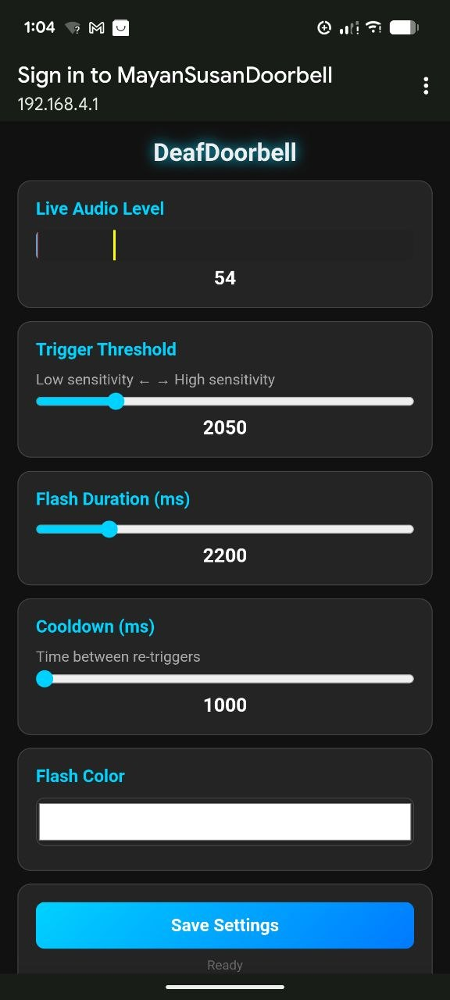

Non-invasive digital bridge for visual accessibility.
Upgrade any home with a high-performance visual alert system. No complex wiring, no professional install. This plug-and-play solution uses wireless ESP-NOW protocols to bridge the gap between sound and sight.
Installation Strategy: The Leader is placed directly next to the chime of your doorbell. Its volume trigger threshold is set high enough that it's only triggered by the specific chime and won't easily react to other household sounds like conversation or a TV.
Live RMS volume meter. Mirrors the physical status LED.
Flashes 8x8 matrix on trigger. Pulsing heartbeat when idle.
Configuration & Tuning: All settings are reached by connecting your smartphone or computer to the door ring detector's WIFI Access Point. The built-in captive portal takes you immediately to the live configuration page.

From this dashboard, you can see the volume level reacting in real-time, fine-tune the trigger threshold, and adjust LED flash colors to your preference.
Reliability starts with power. While standard USB cables work, we recommend modifying them for permanent installs.
The Pro Way: Any USB power source will output 5V by default. For the cleanest setup, strip a USB-C cable and solder the wires directly to the 5V and GND pins on the ESP32-C3. This ensures maximum contact integrity and allows for stress-relieved wiring.
| Function | Pin | Function Detail |
|---|---|---|
| I2S Data (SD) | 0 | I2S Mic Input |
| I2S Clock (SCK) | 1 | Mic Clock Output |
| I2S L/R Select | 2 | GND Drive |
| I2S Word Select (WS) | 3 | Sync Clock |
| Status LED | 8 | Audio-Reactive PWM |
| Function | Pin | Function Detail |
|---|---|---|
| 8x8 LED Matrix | 4 | WS2812B Data |
| Heartbeat LED | 8 | Idle Pulse |
Print these files in PETG or PLA with 15% infill. Open designs ensure optimal cooling and LED visibility.